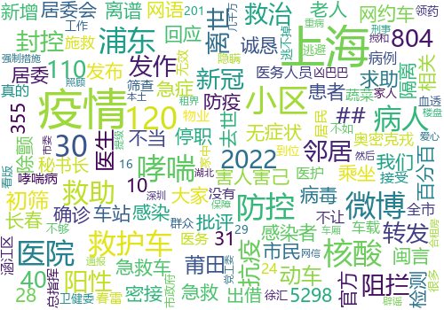

Call back DP06 绘制词频&词云图
词频 & 词云图：将每个小时（即，每个集合）所有的kWords获取，并统计词频，绘制词频图 & 词云图。保存词频与词云图，下方是词云图的大概情况。
问题：可以看出，词云图只能大概看到高频词的基础情况，无法观察到具体的细节，继续努力！
| 00:00:00 - 00:59:00 | 01:00:00 - 01:59:00 | 02:00:00 - 02:59:00 | 03:00:00 - 03:59:00 |
| 04:00:00 - 04:59:00 | 05:00:00 - 05:59:00 | 06:00:00 - 06:59:00 | 07:00:00 - 07:59:00 |
| 08:00:00 - 08:59:00 | 09:00:00 - 09:59:00 | 10:00:00 - 10:59:00 | 11:00:00 - 11:59:00 |
|  | |||
| 12:00:00 - 12:59:00 | 13:00:00 - 13:59:00 | 14:00:00 - 14:59:00 | 15:00:00 - 15:59:00 |
| 16:00:00 - 16:59:00 | 17:00:00 - 17:59:00 | 18:00:00 - 18:59:00 | 19:00:00 - 19:59:00 |
 |
 |
||
| 20:00:00 - 20:59:00 | 21:00:00 - 21:59:00 | 22:00:00 - 22:59:00 | 23:00:00 - 23:59:00 |